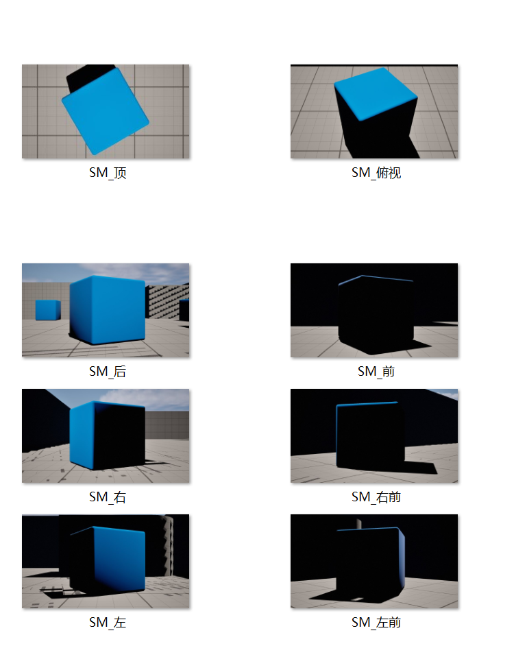
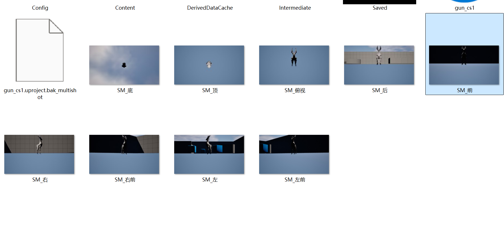
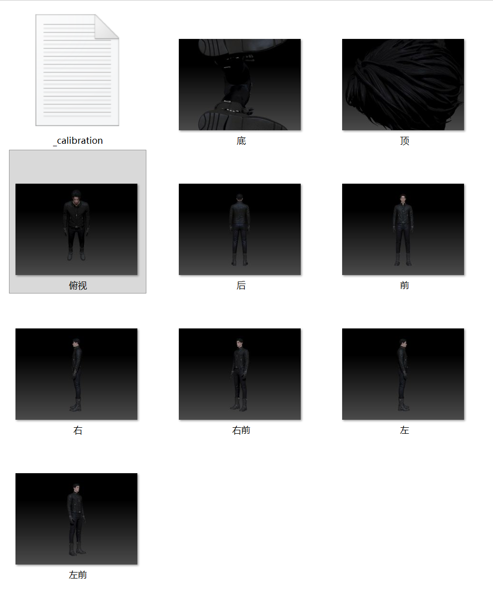
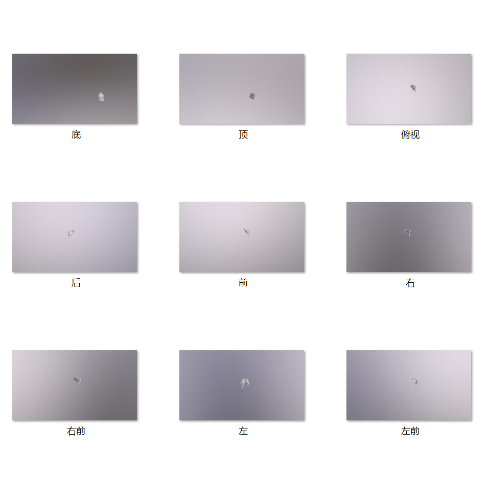
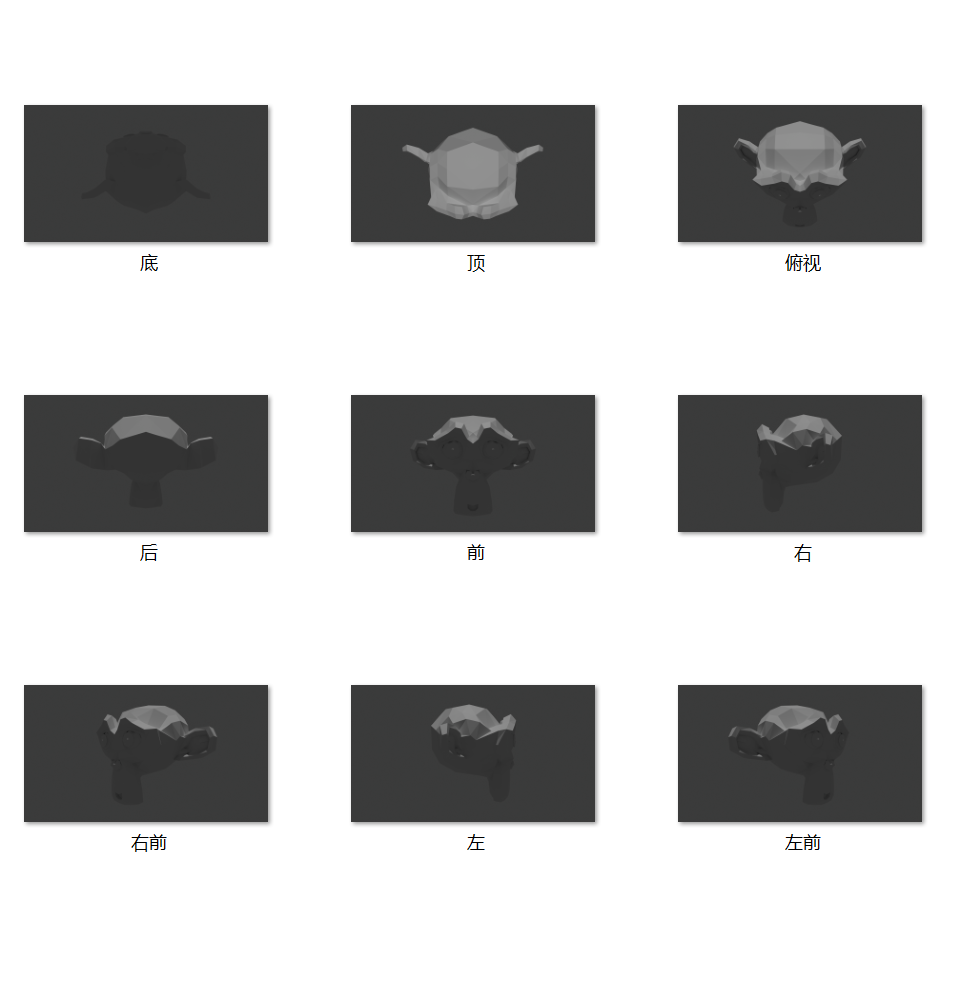
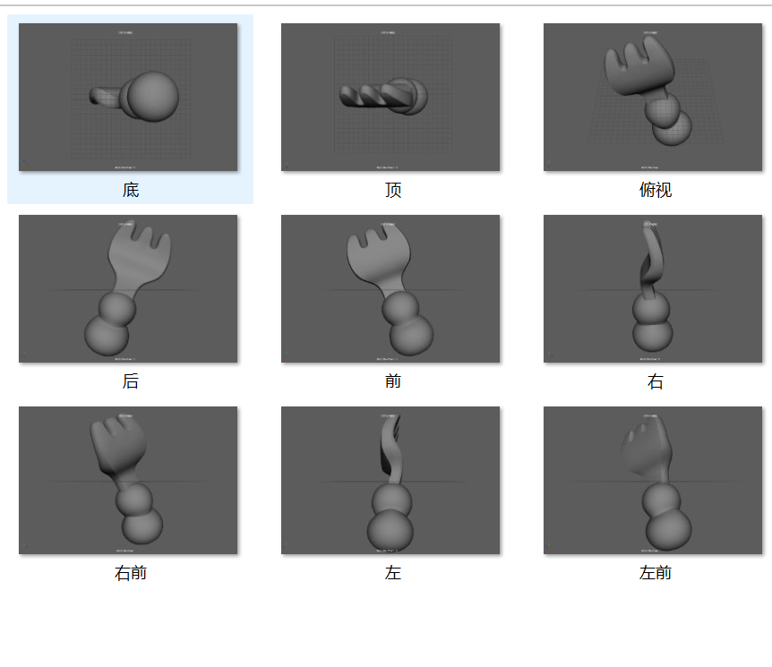

记录日期：2026年3月29日
一、插件背景与需求
在游戏开发过程中，经常需要为游戏宣传、测试报告或内部评估生成大量截图。传统的截图方式需要手动调整相机角度、光照设置等，然后逐个截图，效率低下且容易出错。因此，开发一款能够一键生成多图的插件就显得尤为必要。
最初从 UE 起步开发了一键多截图插件，提高游戏开发过程中的截图效率。后续又衍生出了 3ds Max、ZBrush、Blender、Maya、八猴（Toolbag）的截图工具实践，UE4、UE5 也都可以截图，逐渐形成了覆盖多款 DCC 与引擎的一键截图工具。
其中 ZBrush 版目前只测试过 2022、2024、2026 三个版本。
二、插件功能演示
2.1 空文件夹起步验证：选定路径后多角度批量导出
演示从选定的空文件夹开始，设定好保存路径与目标物体后，插件自动将选中物体的多个角度截图批量导出到指定目录。整个过程无需手动摆相机，一键完成导出。
▲ 演示一：空文件夹起步，选中物体后多角度截图批量输出到指定路径
2.2 完整一键多截图：UE 内置插件按钮直达导出
这是完整 0 到 1 的一键多截图流程展示。截图功能已经作为插件内置在 UE 编辑器里，选中目标物体、选定导出文件夹，点击插件按钮即可直接开始截图，全程在 UE 内完成，不需要离开编辑器。
▲ 演示二：UE 内置插件，点击按钮一键多截图到选定文件夹
三、插件功能
3.1 核心功能
- 一键生成多个预设角度的截图
- 支持自定义截图分辨率和质量
- 自动命名和分类截图文件
- 支持批量处理和定时截图
- 集成到UE编辑器工具栏，操作便捷
四、可视化调参面板更新
这次给插件补了一个独立的可视化调参面板Python窗口，它负责把参数写进UE再出图，面板和出图通过同一个配置文件衔接。面板自上而下分几块：距离系数滑块（左边带 9 机位俯视示意图，拖滑块相机环实时外扩内收）、命名前缀与输出文件夹、9 个机位的勾选（选中显示绿勾，支持全选/反选/全不选）、可选的模型文件归类，以及保存配置 / 打开输出文件夹 / 恢复默认三个操作按钮。
这次更新又优化了摄像机视图的可视化，新版本比第一版更直观、更好理解。下面这段是面板更新完成后的一次全面测试，打开调参面板把每个功能逐项试了一遍，确认各项都能正常使用。
▲ 演示三：可视化调参面板操作
▲ 演示四：摄像机视图可视化更新
▲ 演示五：面板功能逐项测试
▲ 演示八：工具面板更新演示（含全部软件截图调节）
4.1 UE5 截图演示
这是 UE5 版本环境的截图演示，展示插件在较新引擎下的实际运行效果。
▲ 演示六：UE5 截图演示
▲ 演示七：另一组输出结果的视频演示
4.2 输出文件展示
插件运行后自动导出的截图文件，按预设规则自动命名与分类整理。

▲ 输出文件展示：UE一键导出的多角度截图

▲ 输出结果展示：UE另一次导出的截图

▲ 输出结果展示：ZBrush 版截图输出

▲ 输出结果展示：八猴版截图输出

▲ 输出结果展示：Blender 版截图输出

▲ 输出结果展示：Maya 版截图输出